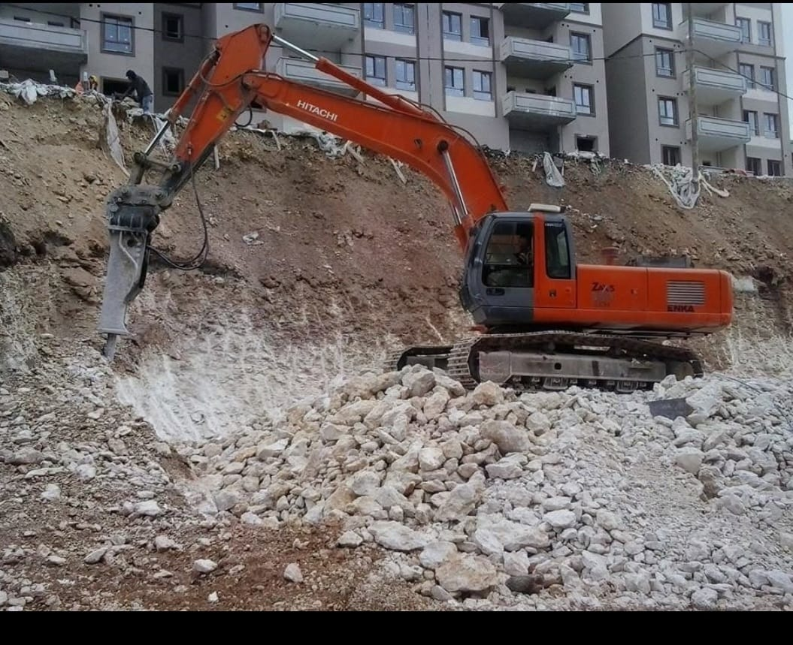

Doğru Ekskavatör Seçimi Nasıl Yapılır?
İnşaat ve hafriyat projelerinde en kritik kararlardan biri, projeniz için doğru ekskavatör tonajını seçmektir. Yanlış seçim hem maliyetleri artırır hem de iş verimliliğini düşürür. Bu yazımızda, projenize en uygun ekskavatörü nasıl seçeceğinizi detaylı olarak anlat açıyoruz.
Proje Büyüklüğüne Göre Tonaj Seçimi
20 Ton Ekskavatör - Küçük Ölçekli Projeler
Villa ve ev temel kazıları, bahçe düzenleme işleri için idealdir. Dar alanlarda rahatça çalışabilir. Yakıt tüketimi düşüktür ve küçük projeler için maliyet etkindir.
30 Ton Ekskavatör - Orta Ölçekli Projeler
Apartman ve küçük iş merkezi temel kazıları için uygundur. Yol çalışmaları ve orta derinlikte kazılar için tercih edilir.
35-40 Ton Ekskavatör - Büyük Projeler
Fabrika, AVM ve toplu konut projeleri için gereklidir. Derin kazı işlerinde ve büyük hafriyatlarda kullanılır.
Dikkat Edilmesi Gereken Faktörler
- Kazı Derinliği: Proje ne kadar derin kazı gerektiriyorsa o kadar büyük tonaj gerekir
- Zemin Yapısı: Kayalık ve sert zeminler için daha güçlü makineler şarttır
- Çalışma Alanı: Dar alanlarda küçük tonajlı makineler daha pratiktir
- Proje Süresi: Uzun süreli projeler için aylık kiralama daha ekonomiktir
- Bütçe: Ton ajla birlikte kiralama maliyeti de artar
Operatör Tecrübesi
Doğru makineyi seçmek kadar, deneyimli bir operatörle çalışmak da önemlidir. Kayseri Emir Hafriyat olarak, 25 yıllık tecrübemiz ve uzman operatör kadromuzla projelerinizde yanınızdayız.
Ücretsiz Danışmanlık
Projeniz için hangi tonajın uygun olduğunu öğrenmek ister misiniz? Hemen arayın!
0531 702 35 38